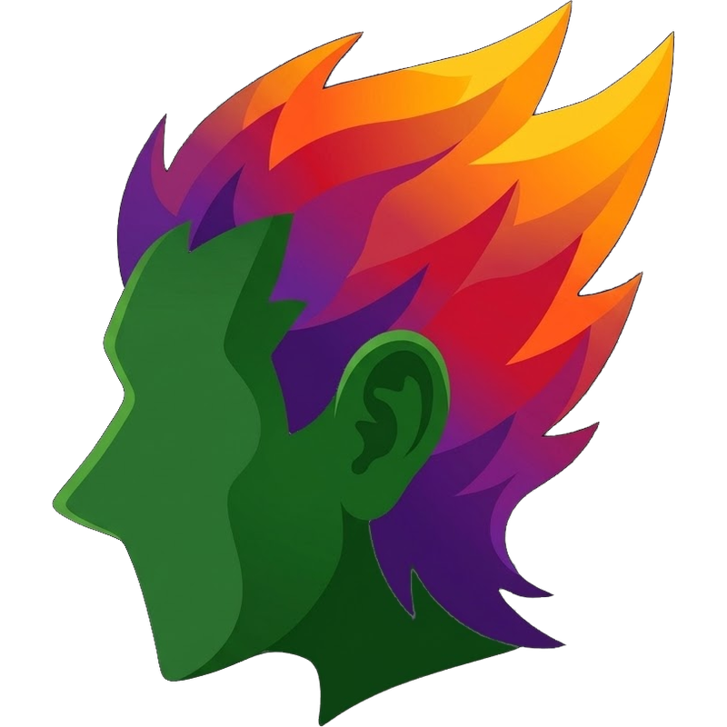

ÉguaTex
Escreva LaTeX no computador, de qualquer canto da Amazônia, mesmo sem internet.
Um programa para Windows que escreve e compila TCC, artigos e relatórios, com o PDF ao lado do texto. O compilador LaTeX já vem junto. Gratuito, em português, feito no Pará e aberto no GitHub.

Acenda uma fórmula
Digite LaTeX à esquerda e veja o resultado na hora. É só uma amostra no navegador. No programa você escreve documentos inteiros.
Baixe o ÉguaTex
Procurando a versão mais recente…
- Versão
- Publicada em
- Tamanho
Para Windows 10 e 11, 64 bits. O instalador tem cerca de 74 MB e vem direto do GitHub.
Como instalar
A instalação leva uns dois minutos e não pede conta nem cadastro.
-
Baixe o instalador
Clique em “Baixar para Windows” nesta página. O arquivo
ÉguaTex_x64-setup.exevai para a pasta Downloads. -
Abra o arquivo baixado
Dê dois cliques no instalador. Se o Windows mostrar “O Windows protegeu o computador”, clique em “Mais informações” e depois em “Executar assim mesmo”. O aviso aparece porque o programa ainda não tem assinatura digital.
-
Instale
Siga as telas do instalador. Não precisa ser administrador nem instalar o LaTeX à parte: o TinyTeX já vem junto.
-
Abra e escreva
O curupira aparece no menu Iniciar. Crie um documento em branco, escreva e clique em Compilar para ver o PDF.
Por que um curupira?
Na lenda, o curupira protege a floresta. Tem o cabelo de fogo e os pés virados para trás, e quem tenta seguir as pegadas dele acaba andando na direção errada.
O ÉguaTex pegou emprestada essa teimosia. LaTeX costuma ser coisa de computador grande, de laboratório, de quem tem tempo e máquina. Aqui a ideia anda ao contrário: o texto científico cabe no computador de casa, funciona sem internet na beira do rio e não pede máquina de laboratório para quem estuda na UFPA.
E o nome? “Égua” é como a gente diz que algo é bom demais por aqui. Égua, que fórmula bonita.